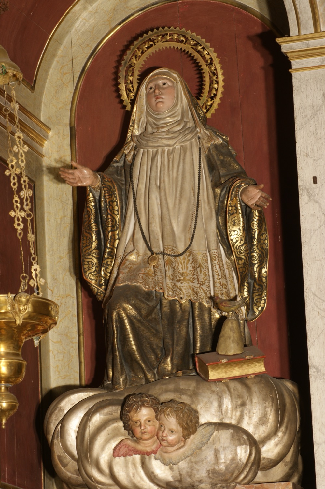

Santa Catalina Tomás (1531–1574), conocida popularmente en Mallorca como sor Tomaseta o la Beata, es la única santa nacida en Mallorca. Fue una monja canonesa agustina, famosa en vida por su sabiduría y prudencia, por sus dones proféticos, por sus luchas con el demonio y por sus éxtasis místicos, que en ocasiones llegaron a durar 24 horas. Cuando, 43 años después de su muerte, se abrió su tumba, encontraron su cuerpo y sus ropas sin ningún signo de corrupción; su cuerpo incorrupto se expone en el convento de Santa Magdalena de Palma.
En esta escultura aparece arrobada, mirando una paloma en el cielo que representa al Espíritu Santo. Viste el hábito de su orden: túnica negra con roquete blanco, toca blanca cubierta con velo y manto negros, y una penitencia colgada del cuello. A su lado hay un libro cerrado, un pan de azúcar de forma cónica y un pájaro. El libro cerrado simboliza la Regla de san Agustín, que seguía como canonesa regular. El pan de azúcar hace referencia a un episodio de su vida: una monja que debía cantar la Sibila le pidió un poco de azúcar para tener la boca más dulce al cantar, y santa Catalina le dijo que volviera cuando tuviera que entrar en el coro. Cuando regresó, la monja la encontró arrodillada en éxtasis con un pan de azúcar entre las manos. Finalmente, el pájaro representa un pajarillo que, según una monja contemporánea suya, era “de diferentes colores, no como los que ordinariamente conocemos” y que, durante los últimos años de su vida, solía posarse sobre sus manos y cantarle “suavísimamente”.
El retablo de esta capilla dedicada a santa Catalina Tomás es obra del escultor Miquel Matas y fue encargado en 1794, apenas tres años después de la beatificación de la titular. Esta escultura de la entonces beata fue la primera que se instaló en el retablo, en 1795.